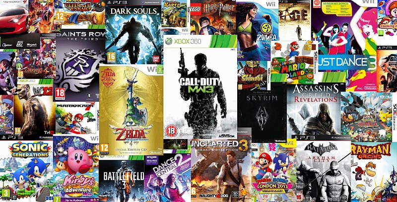
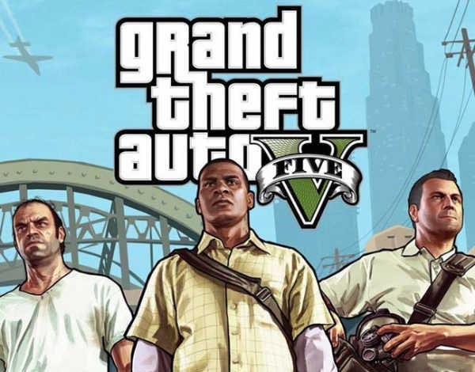

VIDEOJUEGOS EN TENDENCIA
En esta pagina podar ver algunos de los video juegos que estan entendencia este 2024 y una pequeña reseña de estos. Encontraras categorias como videojuegos de terror, accion, y videojuegos para dispositivos moviles.
hay algunos videojuegos clasicos los cuales son tendencia en los ultimnos tiempos y entre ellos encontraras sagas muy conocidas como son estas dos, CALL OF DUTY, GTA.
Estos son algunos de los videosjuegos en tendencia este 2024.
CALL OF DUTY WARZONE

Call of Duty: Warzone es uno de los juegos de Battle Royale gratuitos más importantes de todos los tiempos. Forma un equipo o vuela en solitario a través de varios entornos gigantescos y sé el último pelotón en pie para ganar. Juega a una variedad de modos de juego de Battle Royale, incluidos modos especiales por tiempo limitado durante todo el año. Mapas incluidos: Rebirth Island Fortune’s Keep Urzikistán Vondel
FORNITE

Fortnite es un mundo de experiencias múltiples. Dejaos caer en la isla y competid hasta ser los últimos jugadores (o equipos) que queden en pie. Cread una isla personalizada con vuestras propias reglas. Quedad con vuestros amigos en una isla creada por una de vuestras amistades. O eliminad hordas de monstruos con otros jugadores para salvar el mundo.
BATTLE ROYALE.
En Battle Royale de Fortnite, bajaos del autobús de batalla, dejaos caer sobre la isla y combatid hasta que no quede nadie más en pie. También podéis formar equipo con vuestros amigos u otros jugadores para sobrevivir a vuestros oponentes. Usad la madera, el ladrillo y el metal como materiales para construir estructuras que os ayuden a sobrevivir. Siempre hay algo que hacer en Battle Royale de Fortnite: nuevos objetos, armas, vehículos, modos, eventos especiales y temporadas. Cada nueva temporada aporta una temática distintiva a la isla, como por ejemplo, la dominación de los agentes secretos o una inundación enorme.
GRAND THEFT AUTO V
GTA 5 es la quinta entrega de la exitosa saga de videojuegos sandbox desarrollada por Rockstar Games. Con millones de ventas a sus espaldas y uno de los mundos abiertos más ricos hasta la fecha, Grand Theft Auto V transporta al jugador a Los Santos, una extensa y soleada metrópolis en declive que lucha por mantenerse a flote en una era de incertidumbre económica y realities baratos que referencia de una forma paródica a la Los Ángeles de nuestro tiempo.
Grand Theft Auto V (abreviado como GTA V o GTA5) es un videojuego de acción-aventura de mundo abierto desarrollado por la compañía británica Rockstar North y distribuido por Rockstar Games. Fue lanzado el 17 de septiembre de 2013 para las consolas PlayStation 3 y Xbox 360.
LEFT 4 DEAD 2

Left 4 Dead es un videojuego de terror de disparos en primera persona desarrollado por Valve South y publicado por Valve. El juego utiliza el motor gráfico de Valve, Source, y está disponible para Microsoft Windows, Xbox 360 y macOS. Fue lanzado originalmente para Microsoft Windows y Xbox 360 en noviembre de 2008 y para Mac OS X en octubre de 2010, y es el primer título de la serie Left 4 Dead. Ambientado tras un brote de zombis en la costa este de Estados Unidos, el juego enfrenta a sus cuatro protagonistas, apodados los "Supervivientes", contra hordas de infectados.